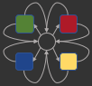

FoPAS 2020
Submissions
Committees
website maker
FoPAS 2020
Committees
Workshop Chairs
Michael Adams
- Queensland University of Technology
Andreas Hense
- Bonn-Rhein-Sieg University oAS
Arthur ter Hofstede
- Queensland University of Technology
Program Committee
TBA
© FoPAS 2020 - All Rights Reserved